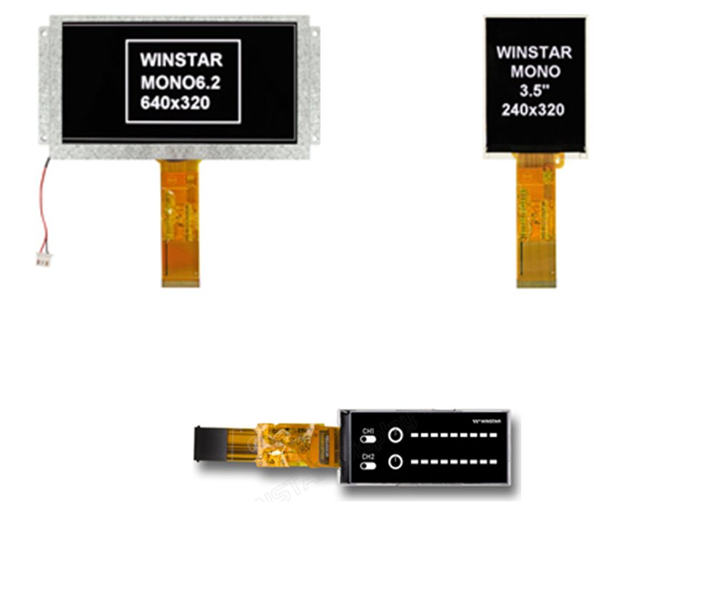

Monochrome TFT Technology
Monochrome TFT LCD modules from 3" to 6.2", with resolutions from 320x120 to 640x320. Find out why mono TFT gives higher contrast and brightness than STN, and how to choose a viewing mode and interface.
Monochrome TFT LCD modules from 3" to 6.2", with resolutions from 320x120 to 640x320. Find out why mono TFT gives higher contrast and brightness than STN, and how to choose a viewing mode and interface.

A monochrome TFT is an active matrix LCD built like a colour TFT, but without the colour filter. Every pixel has its own thin film transistor, so it switches cleanly and holds its level, giving a sharp black and white or greyscale image with much higher contrast and faster response than a passive STN graphic LCD.
Mono TFT is a low cost alternative to a full colour display, and an upgrade for designs that use STN or FSTN graphic modules. As the authorised distributor for Winstar Display Corporation we offer mono TFT modules from the 3" 320x120 bar display up to the 6.2" 640x320, including a wide temperature 3.5" and a 5.7" with capacitive touch.
Contrast up to 900:1
Sizes from 3" to 6.2"
Up to 16 grey levels
MCU and SPI interfaces
Brightness up to 800 cd/m²
Operating down to -30℃ on the 3.5"
Each pixel of a TFT LCD is a liquid crystal light valve with its own thin film transistor. The transistor charges the pixel to a set voltage and holds it there until the next refresh, so every pixel stays crisp, unlike a passive STN display where pixels share drive lines and contrast falls as the panel gets larger.
A colour TFT splits each pixel into red, green and blue sub-pixels behind colour filters, which absorb much of the backlight. A mono TFT leaves the filter out, so light passes straight through each pixel. The result is a brighter image and deeper contrast from the same backlight, with each pixel showing black, white or a grey level.
Simplified illustration, not to scale: the arrows show relative light output, not measured values
Why designers choose mono TFT where colour is not needed
Contrast of 800:1 to 900:1, far beyond STN graphic LCDs, for crisp text and graphics.
With no colour filter, brightness reaches 800 cd/m² on the 5.7" from an ordinary LED backlight.
Active matrix switching gives fast response, so moving bars and meters update smoothly.
Normally black wide view panels on the 3", 3.5" and 6.2" keep their contrast off-axis.
Each module has its driver IC and frame memory built in, so it connects straight to a microcontroller.
A cost-effective upgrade from STN, without paying for colour your product does not need.
Most of the range uses normally black panels: the pixels are black with no drive, giving a deep black background and wide viewing angles. These suit white or light graphics on a black background.
The 5.7" uses a normally white TN panel with a 12 o'clock viewing direction, suiting dark text on a light background viewed from a set angle.
| Panel type | Models | Viewing |
|---|---|---|
| Normally black, IPS-type | 3" 320x120 | 80° in all directions |
| Normally black, wide view | 3.5" 240x320 | Wide view |
| Normally black, VA | 6.2" 640x320 | Wide view |
| Normally white, TN | 5.7" 320x240 | 12 o'clock direction |
Every module has its driver IC and display memory built in, so your microcontroller only writes data when the picture changes. Choose SPI for the fewest connections, or an MCU parallel bus for faster updates of larger screens.
Our engineers can help match a display and interface to your design and arrange samples.
| Interface | Driver IC | Used On |
|---|---|---|
| 3-line SPI | ST7512 | 3" WFN0300A3T0YASNN000 |
| MCU parallel | ST7511 / ST7511U | 3.5" WF35NTVAJDNN0, 6.2" WF62ATXGRDNN0 |
| MCU or SPI | ST7511U | 5.7" WF57STIACDNGB |
| I2C (touch) | ILI2130 | 5.7" WF57STIACDNGB PCAP |
Compare our mono TFT modules by size, resolution, interface, brightness, temperature and outline
| Model | Size | Resolution | Interface | Brightness | Operating temp | Outline (mm) |
|---|---|---|---|---|---|---|
| WFN0300A3T0YASNN000 | 3.0" | 320x120 | 3-line SPI | 450 cd/m² | -20℃ to +70℃ | 86.35 x 35.89 x 7.2 |
| WF35NTVAJDNN0 | 3.5" | 240x320 | MCU | 500 cd/m² | -30℃ to +80℃ | 62.9 x 86.54 x 4.1 |
| WF57STIACDNGB | 5.7" | 320x240 | MCU or SPI, PCAP touch | 800 cd/m² | -20℃ to +70℃ | 160.0 x 109.0 x 8.74 |
| WF62ATXGRDNN0 | 6.2" | 640x320 | MCU | 600 cd/m² | -20℃ to +70℃ | 170.32 x 88.3 x 5.3 |
Figures from Winstar's specifications. See the datasheet or contact us for details. View Monochrome TFT Displays →
Mono TFTs suit products that need a clear, high contrast display without colour
Control panels, PLC displays and machine status screens.
Level meters and status bars on AV and pro audio equipment.
Clusters and auxiliary displays where colour is not required.
Test equipment, meters and data loggers with sharp readouts.
Outdoor and refrigerated equipment, with the 3.5" rated to -30℃.
Replacing STN and FSTN graphic LCDs for higher contrast.
Our engineering team can help specify or develop a custom solution for your exact requirements.
Talk to Our Engineers